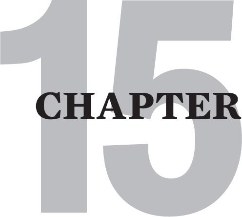
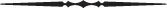

BIBLIOTHERAPY AND THE COMMUNITY OF BOOKS
Bibliotherapy is a term that describes the very real process of being positively and therapeutically influenced by what you read. As stated earlier, when it is at its most powerful, bibliotherapy is also relationally healing. It can rescue you from the common Cptsd feeling of abject isolation and alienation.
Bibliotherapy can play an enormous role in enhancing recovery from Cptsd. I usually find that my clients who make the most progress are those who augment their therapy sessions with reading homework [self-prescribed or recommended by me].
This is especially true of those who further augment their reading with journaling about their cognitive and emotional responses to what they have read. I believe that journaling helps build the new physiological and neuronal brain circuitry that occurs as we effectively meet our developmentally arrested childhood needs. [For more on Journaltherapy, read the section on verbal ventilating in chapter 5 of my first book].
Bibliotherapy is especially helpful for people like me who grew up in dangerous social environments replete with adults who offered little but criticism, intimidation and disgust. It equally serves those whose early lives were devoid of adults who could be looked to for safe support and guidance.
It was not until later in life, after I had quite a few years of group and individual therapy, that I realized that my journey of recovering had actually begun decades before my formal therapy. It began with all the therapeutic reading and writing I had instinctively gravitated to. I unconsciously sought the help of others in the many spiritual and psychological self-help books that I was intuitively drawn to.
Without really understanding it, I gained valuable insights about how to improve the way I treated myself and others. Just as importantly, I subliminally realized that there were a number of good, safe, wise and helpful adults out there who could be trusted and who had a great deal of wise and kind guidance to offer.
I remember my first deeply emotional experience of entering the community of books. I was in the library resentfully slogging through the poetry section trying to find a book for my homework in high school English.
I was up to “W “and had found nothing that remotely interested me when I came to an anthology with the picture of a very compelling looking old man on its cover. Walt Whitman! His epic poems Song of Myself and Song of the Open Road thrilled me and changed my life. He became my hero and the first adult role model that had something useful and important to teach me. His ideas became my raison d’être and gave me a hopeful plan for what I would do when I finally escaped my family.

Over time the authors in my community of books seemed like a small tribe of elders who I imagined as people who would have empathy for me if I were to meet them. Eventually when I achieved something of a critical mass of this awareness, I managed to take a frightening leap into the water of therapy. I lucked out and got a good enough therapist to help me take steps in my healing that I could not manage on my own.
So here are some authors [and their works] who have been especially helpful to me on my journey. These are the wise aunts and uncles I never biologically had.
ESPECIALLY RECOMMENDED READING
Alice Miller | The Drama of The Gifted Child {Great book for overcoming denial and understanding the profound impact of growing up poorly parented. Very relevant for fawn types.} |
Gravitz & Bowden | Guide to Recovery {Great short, powerful overview of recovery. Oriented to recovering from having alcoholic parents, but very relevant to having traumatizing parents. Read this if you can only read one book.} |
L. Davis & E. Bass | The Courage to Heal {Classic on recovering from sexual abuse.} |
Jack Kornfield | A Path with Heart {Using meditation to increase self-compassion.} |
Steven Levine | Who Dies {Mindfulness and radical self-acceptance.} |
Sue Johnson | Hold Me Tight {The book, and especially the DVD of the same name, shows how she teaches real couples to use their emotional vulnerability to develop real intimacy and a healthy attachment bond.} |
Healing The Shame That Binds {Brilliant book on recovering from toxic shame and growing up in a dysfunctional family.} | |
Judith Herman | Trauma and Recovery {The book in which Herman coins the term Complex PTSD. Last half of book more relevant to recovery.} |
Susan Anderson | The Journey from Abandonment to Healing {Oriented toward recovering from divorce, but remarkably relevant to Cptsd recovery.} |
J. Middleton-Moz | Children of Trauma {Excellent overall book on recovery.} |
Beverly Engel | Healing Your Emotional Self {Advocates angering-at-the-critic work.} |
Theodore Rubin | Compassion and Self-hate {Wonderful appeal to self-compassion.} |
Susan Forward | Betrayal of Innocence { Good overall book on recovery.} |
Byron Brown | Soul Without Shame {Inner critic shrinking with angering-at-the- critic and Mindfulness perspective.} |
Susan Vaughan | The Talking Cure {How Therapy and Relational Healing works with very accessible neuroscientific evidence and an enlightened view of therapy.} |
Lewis & Amini | A General Theory Of Love {Accessible poetic and scientific argument on the human need for love and attachment.} |
Pat Love | The Emotional Incest Syndrome {Great book to heal from codependent entrapment with a narcissistic mother.} |
Robin Norwood | Women Who Love Too Much {Early classic on Codependence.} |
Learning to Love Yourself Recovery of your Inner Child {Great book on Journaltherapy.} | |
Cheri Huber | There is Nothing Wrong with You {Great book for overcoming shame and cultivating self-compassion.} |
Christine Lawson | Understanding The Borderline Mother {Healing from having a borderline or narcissistic mother; explores 5 different types.} |
Elan Golomb | Trapped in The Mirror {Healing from having a narcissistic parent.} |
John Gottman | The Seven Principles of Making Marriage Work |